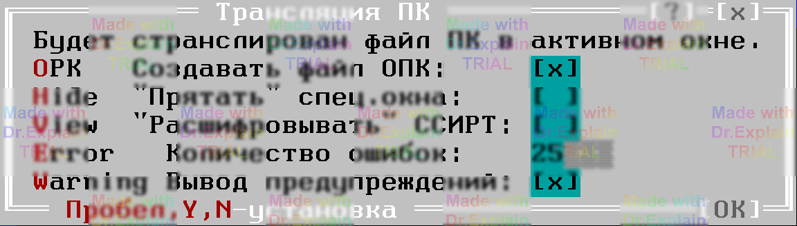

3.3 Команда Compile/Make — трансляция ИПК
Перед запуском компиляции исходная программа контроля (ИПК) должна быть открыта в активном окне редактора (см. [11 п. 10.1]). Трансляция вызывается пунктом меню Compile → Make или горячей клавишей F9.

Опции окна Compile/Make
Количество ошибок
Максимальное число сообщений ?Error
или ?Config
,
после которого трансляция прерывается досрочно.
Вывод предупреждений
Разрешает показывать «сомнительные» участки кода
(префикс ?Warning
) в окне «Сообщения».
Дополнительная фильтрация отдельных типов предупреждений
настраивается через Options → Warning.
Для запуска трансляции нажмите Enter; Esc отменяет операцию (уже созданные файлы выполнения при этом не удаляются).